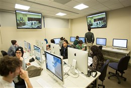

¿Quién soy? Soy Sergio Canaviri Felix, Ingeniero de Sistemas de profesión, docente de vocación, desarrollador de software, especialista en redes y creador de contenido digital. Me apasiona resolver problemas complejos aplicando la lógica y la computación.

=============================================================
FICHA PROFESIONAL - ING. SERGIO CANAVIRI FELIX
=============================================================
Nombre Completo : Sergio Canaviri Felix
Profesión : Ingeniero de Sistemas
Ocupaciones : Desarrollador Web, Docente y Creador Digital
Especialidad : Programación, Servidores, Robótica y Educación
País : Bolivia
=============================================================